2. Mitsubishi logo¶
In this exercise we will continue using alignments, together with turns and joints.
First we open a new document with Inkscape.
Next we will create a triangle with the polygon drawing tool .
The options must be chosen in the upper bar to draw a triangle (normal polygon with 3 corners without roundness or randomness)
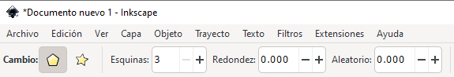Don't forget to press the control key
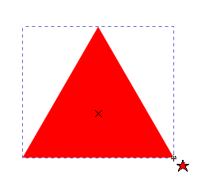 while drawing the triangle to ensure that it has a perfectly horizontal base.
while drawing the triangle to ensure that it has a perfectly horizontal base.Finished the triangle we are going to draw a rhombus.
We duplicate the triangle with the menu option
Edit... Duplicateor with the Control+D keys.Next we select the menu option
Object... Vertical reflectionor press the V key.We will see on the screen two triangles like the ones in the following image.
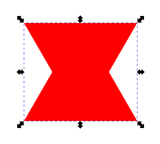Now all that remains is to align the two triangles correctly. To achieve this, click on the selection tool
 and we select the two triangles of the image.
and we select the two triangles of the image.Then with the menu option
Object... Align and distribute...we choose Relative to: First selected
and click align the upper side of the objects to the lower edge of the anchor
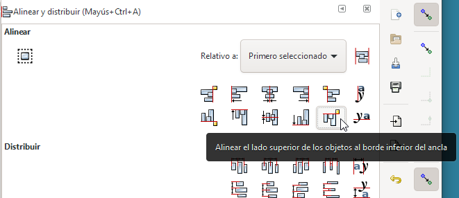Our drawing will be as follows.
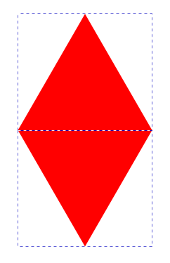To unite the two triangles in a single object, we choose the option
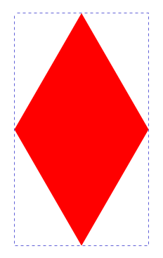Path... Unionfrom the menu, so that the rhombus will be formed by a single piece.The next task will be to duplicate the rhombus twice and rotate the two copies 120 degrees left and right.
We duplicate the rhombus by selecting the
Edit... Duplicatemenu option twice.Next we select the menu option
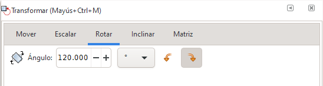Object... Transform.... A window will appear on the right in which we choose the option to turn to the right 120 degreesClicking on the
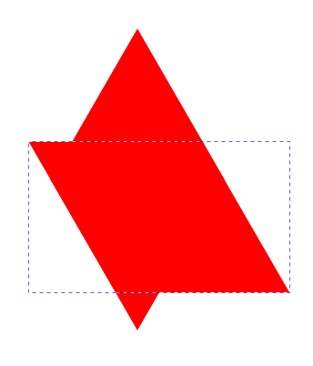Applybutton will rotate the rhombus like this.To continue we must select one of the vertical diamonds again with the select tool
and with the menu option Object... Transform...we rotate the other rhombus to the left 120 degrees.Now we can move the diamonds to make them more like the logo.
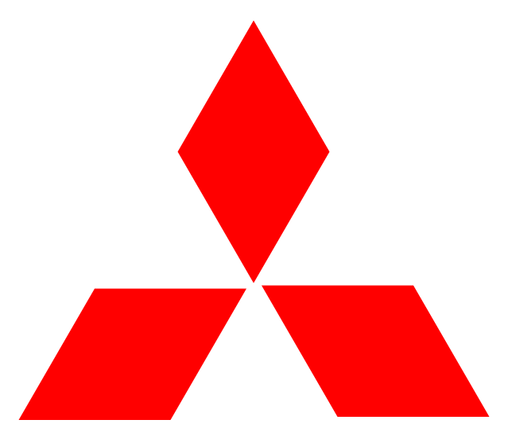To continue we are going to place the two lower rhombuses in their place so that their corners coincide.
We select the two rhombuses that are horizontal and with the menu option
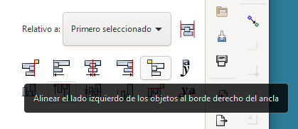Object... Align and distributewe click on the option to align the left side with the right side of the anchor.Next we align the upper edge of the two rhombuses.
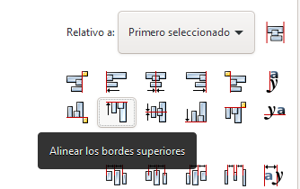With what we will have the image that can be seen below.
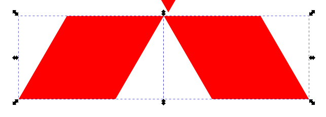At this point we are going to unite the two rhombuses with the
Object... Groupmenu option. In this way the two diamonds cannot be separated.We will finish by selecting all the elements and aligning with the align top side to bottom edge of objects option.
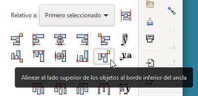To finish centering on the vertical axis.
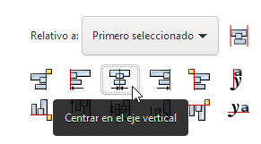The logo will be finished like this.
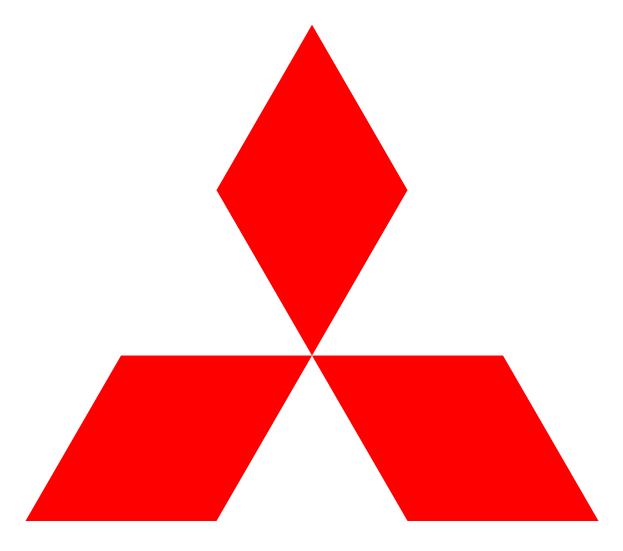